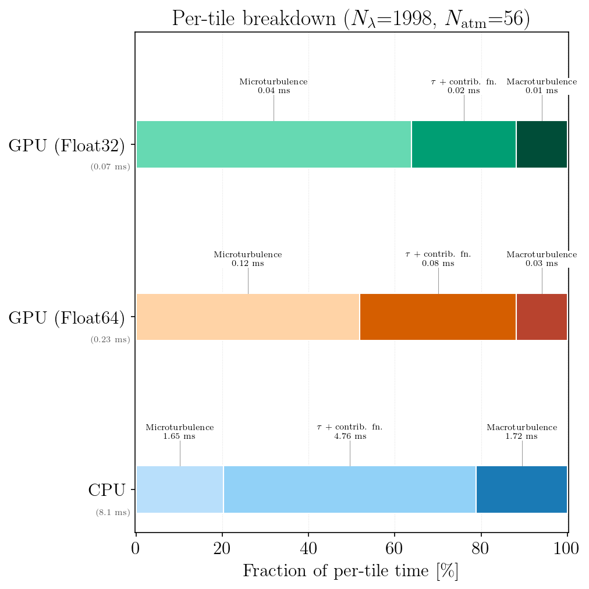
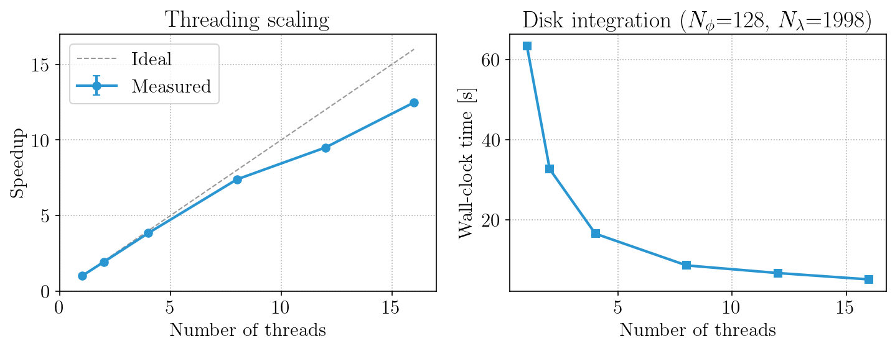
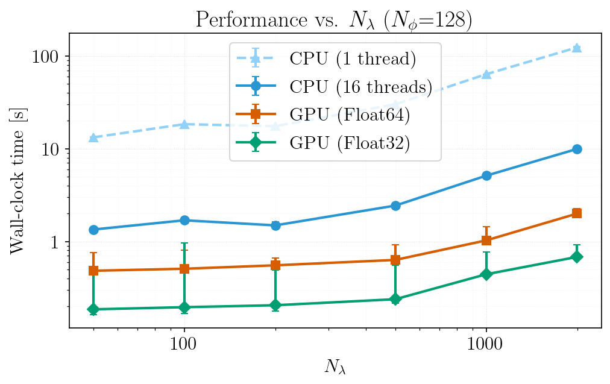
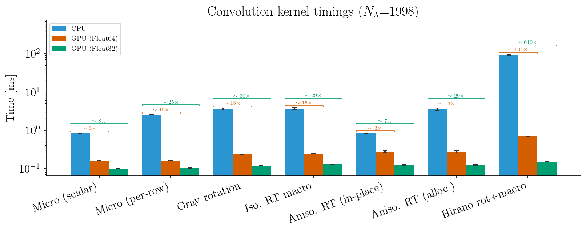
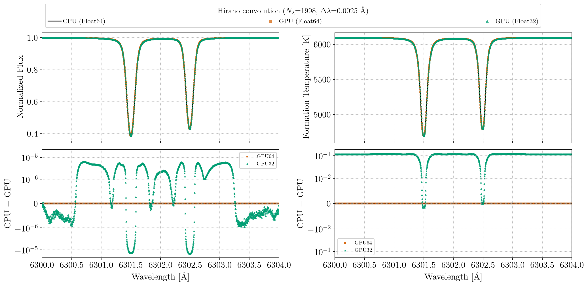
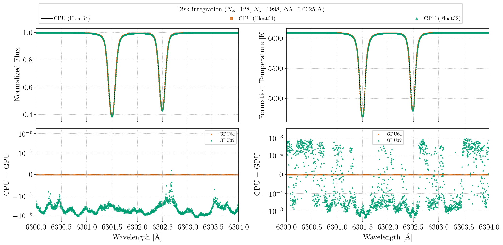

Parallelization
FormationTemps.jl can use CPU threads and an NVIDIA GPU. What each speeds up depends on the integration method:
method | CPU threads | GPU |
|---|---|---|
:disk | surface tiles run in parallel | yes |
:quadrature | absorption calculation only | yes |
:hirano | absorption calculation only | yes |
:disk is the method that needs parallel hardware most. :quadrature is fast enough that the absorption calculation is often the largest part of a call.
CPU multithreading
Start Julia with several threads:
julia -t auto # all available cores
julia -t 8 # 8 threadsor set JULIA_NUM_THREADS before launching. :disk on the CPU scales well to about 16 threads (about 12× at 16).
Multithreading is not compatible with calling FormationTemps.jl from Python through juliacall: it can crash the process. Set JULIA_NUM_THREADS=1 when calling from Python, and use the GPU or method=:quadrature for speed instead. See the Python Tutorial.
GPU acceleration
The GPU is used by default when a working NVIDIA device is found (CUDA.functional() == true); pass use_gpu=false to force the CPU. To check your setup:
using CUDA
CUDA.functional() # should return true
CUDA.versioninfo() # device and toolkit detailsIf CUDA.functional() returns false, see the CUDA.jl troubleshooting guide; FormationTemps.jl falls back to the CPU.
Precision
result = calc_formation_temp(star, linelist; gpu_precision=Float32)gpu_precision=Float32 roughly halves GPU memory and can be faster on consumer GPUs. Absorption is always computed at Float64 and converted. The cost in accuracy is small (see below). The default is Float64.
Benchmarks
Measured on an Intel Xeon w5-3435X (16 cores / 32 threads) with an NVIDIA RTX 6000 Ada (48 GB), for two Fe I lines near 6300 Å with solar parameters (vsini = 2100 m/s, ζ = 3500 m/s, ξ = 850 m/s) and Nϕ = 128. Regenerate everything with julia --project=. -t auto benchmarks/run_all.jl.
Cost per surface tile (:disk)

CPU thread scaling (:disk)

Performance vs. wavelength grid size (:disk)

Broadening kernels
Time per broadening kernel on CPU and GPU.

Tips
- GPU memory. Each call allocates its GPU buffers. If memory is tight, use
gpu_precision=Float32. - Large linelists. The absorption calculation runs on the CPU for every method and grows with the number of lines ×
Nλ. For large linelists it can dominate the total time, GPU or not; see Large Linelists.
Float32 vs. Float64 accuracy
On the CPU and the GPU at Float64 the results agree to rounding. At Float32 the GPU results differ from the CPU by about 10⁻⁶ in flux and a few mK in formation temperature with :disk, and by about 10⁻⁵ and 0.1 K with :hirano. The figures show both, for two Fe I lines near 6300 Å; the bottom rows are residuals against the CPU at Float64.

